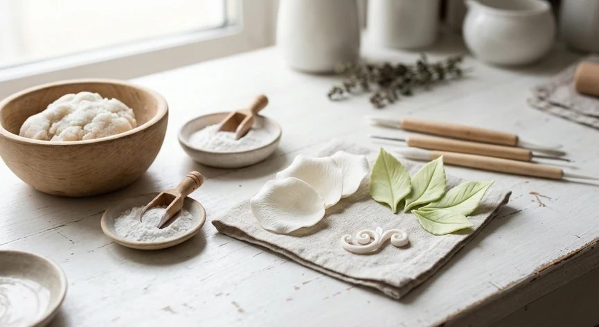
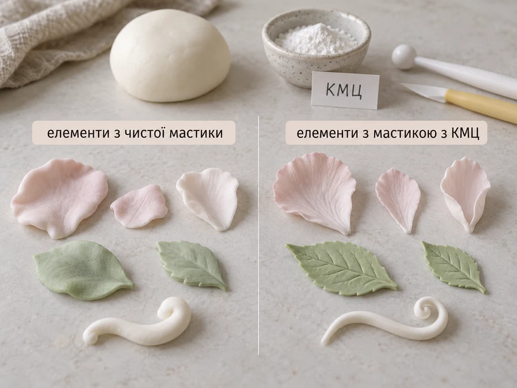

КМЦ додають у мастику, коли звичайна цукрова маса виходить надто м’якою для фігурок і дрібних деталей. Після додавання порошку мастика стає щільнішою, краще тримає форму і швидше підсихає. Це особливо зручно під час ліплення об’ємних фігурок, квітів, вушок, пелюсток та інших елементів, які не повинні опливати під власною вагою.
КМЦ продається під різними назвами: CMC, карбоксиметилцелюлоза, а поруч часто зустрічається й назва Tylose. Через це легко заплутатися, хоча за призначенням такі продукти багато в чому схожі.
Головне під час роботи з КМЦ — не додавати порошок надто щедро. Невеликої кількості зазвичай достатньо, щоб помітно змінити властивості мастики. Якщо переборщити, маса може стати надто жорсткою і почати тріскатися під час ліплення.
Що таке КМЦ для мастики
КМЦ — це карбоксиметилцелюлоза, харчова добавка, яку використовують як загусник і стабілізатор. У кондитерській роботі її додають у готову мастику, щоб зробити масу щільнішою та стійкішою.
На упаковці можна побачити назви CMC, КМЦ, cellulose gum або sodium carboxymethyl cellulose. Для харчової карбоксиметилцелюлози також використовується позначення E466.
Після вимішування КМЦ діє не миттєво. Мастиці потрібно трохи полежати, після чого вона стає пружнішою і краще зберігає надану форму.
Для обтягування торта така щільність потрібна далеко не завжди. А от під час ліплення фігурок вона буває дуже корисною: деталі менше просідають, тонкі елементи краще тримають вигин, а сама маса стає зручнішою для моделювання.
Важливо!
КМЦ не замінює правильне сушіння фігурок. Добавка допомагає мастиці тримати форму, але готовому декору все одно потрібно дати час висохнути.
Навіщо КМЦ додають у мастику
Мастика для обтягування має залишатися достатньо м’якою й еластичною, щоб її можна було розкачати та акуратно перенести на торт. Для ліплення вимоги трохи інші: маса повинна зберігати форму після того, як ви зробили деталь.
КМЦ допомагає зробити звичайну мастику більш придатною саме для такої роботи. Його можна використовувати, якщо потрібно зліпити:
- об’ємну фігурку;
- голову або тулуб персонажа;
- вушка, хвіст, крила та інші виступаючі деталі;
- квіти й пелюстки;
- невеликий декор, який не повинен деформуватися після ліплення.
Добавка стане в пригоді й тоді, коли сама мастика надто м’яка. Наприклад, деталь спочатку виглядає правильно, але через кілька хвилин починає осідати або втрачати форму.
Порада!
Не додавайте КМЦ у всю мастику одразу. Якщо частина маси потрібна для обтягування торта, залиште її м’якою, а порошок додавайте тільки в той шматок, який піде на фігурки та декор.
Робити мастику максимально твердою теж не потрібно. Надто щільну масу складніше розминати та з’єднувати, а тонкі деталі можуть почати тріскатися вже під час ліплення.

Скільки КМЦ додавати в мастику
Кількість КМЦ залежить від самої мастики та конкретного продукту, тому універсальної пропорції для всіх випадків немає.
Наприклад, виробник Satin Ice рекомендує додавати 1/8 чайної ложки CMC на 28 г мастики. Для 200–225 г це приблизно одна чайна ложка порошку.
Цю цифру краще використовувати як орієнтир, а не як обов’язкове правило. У різних видів мастики відрізняються вологість і щільність, а склад самого порошку також може бути різним.
Важливо!
Не додавайте другу порцію КМЦ одразу лише тому, що мастика ще здається м’якою. Після вимішування добавці потрібен час, щоб змінити консистенцію маси.
Краще почати з невеликої кількості, добре вимісити мастику й дати їй полежати. Після цього знову розімніть шматочок і перевірте, наскільки добре він тримає форму.
Як правильно додати КМЦ у мастику
Відокремте шматок мастики, який будете використовувати для фігурок або декору, і добре розімніть його руками.
Додайте потрібну кількість КМЦ і знову вимісіть масу. Порошок має розподілитися рівномірно, без сухих ділянок і грудочок.
Після цього щільно загорніть мастику в харчову плівку або покладіть у герметичний контейнер. Для CMC Satin Ice рекомендує витримку не менше 30 хвилин.
Після відпочинку знову розімніть мастику. Робоча маса має залишатися пластичною, але при цьому добре зберігати форму.
Порада!
Якщо ви працюєте з КМЦ уперше, спробуйте добавку спочатку на невеликому шматочку мастики. Так простіше підібрати потрібну щільність і не зіпсувати всю порцію.
Якщо після витримки мастика все ще надто м’яка і деталь поступово опускається, можна додати ще трохи порошку. Робіть це поступово.

Що робити, якщо КМЦ додали забагато
Якщо КМЦ забагато, мастика стає помітно жорсткішою, гірше розтягується і може почати тріскатися під час ліплення. Особливо добре це видно на тонких деталях і краях.
Спочатку добре розімніть масу теплими руками. Іноді після кількох хвилин вимішування мастика знову стає пластичнішою.
Якщо цього недостатньо, додайте невеликий шматочок такої самої мастики без КМЦ і ретельно з’єднайте обидві маси. Робіть це потроху, щоб мастика знову не стала надто м’якою.
Суворо не робіть!
Не намагайтеся виправити надто жорстку мастику великою кількістю води. Маса може стати липкою й неоднорідною, а працювати з нею буде ще складніше.
Якщо мастика сильно кришиться і погано з’єднується навіть після розминання, простіше змішати її з новою порцією або використати тільки для невеликих деталей.
КМЦ і Tylose — це одне й те саме чи ні
КМЦ і CMC зазвичай означають карбоксиметилцелюлозу. На упаковці також можуть бути вказані назви cellulose gum або sodium carboxymethyl cellulose.
У кондитерських магазинах поруч із КМЦ часто зустрічається й Tylose. Багато таких продуктів справді містять карбоксиметилцелюлозу E466 і використовуються для тих самих завдань: зробити мастику щільнішою та зручнішою для ліплення.
Але орієнтуватися тільки на назву Tylose не варто. У конкретного продукту можуть бути додаткові інгредієнти та свої рекомендації щодо дозування.
Корисно знати!
Якщо у складі Tylose вказані CMC, cellulose gum або sodium carboxymethyl cellulose, перед вами добавка на основі тієї самої карбоксиметилцелюлози.
Тому перед першим використанням нового порошку краще подивитися склад та інструкцію на упаковці.
Чим замінити КМЦ
Якщо КМЦ під рукою немає, звичайну мастику можна зміцнити й іншими добавками. Але замінювати один порошок іншим в однаковій пропорції не варто: склад і рекомендації виробників відрізняються.
Gum-Tex
Gum-Tex — кондитерська добавка Wilton. Її додають у мастику, щоб підвищити її міцність і еластичність, допомогти деталям краще тримати форму та швидше підсихати.
Wilton радить починати з зовсім невеликої кількості Gum-Tex, а після вимішування залишити мастику приблизно на 30 хвилин. Якщо порошку додати забагато, маса може стати надто твердою.
Трагакант
Трагакант, або gum tragacanth, — інша харчова камедь. У харчовій класифікації вона має позначення E413.
У кондитерській роботі трагакант використовують для приготування щільних моделювальних і квіткових мас. Це не КМЦ, тому автоматично використовувати для нього дозування CMC не варто.
Готова gum paste
Якщо потрібно зробити багато квітів, тонких деталей або іншого декору, який має добре тримати форму, можна одразу використовувати готову gum paste.
Така маса від початку призначена для моделювання, тому додатково перетворювати звичайну мастику на щільнішу вже не потрібно.
КМЦ, Tylose, Gum-Tex і трагакант: що вибрати
Якщо ви обираєте добавку під конкретне завдання, зручніше орієнтуватися не тільки на назву порошку, а й на те, що саме збираєтеся ліпити.
| Якщо вам потрібно | Що вибрати | Що врахувати |
|---|---|---|
| Зробити звичайну мастику щільнішою для фігурок | КМЦ / CMC | Додавайте потроху й оцінюйте консистенцію після витримки |
| Використати Tylose | Tylose | Перевірте склад і дозування саме на своїй упаковці |
| Працювати з добавкою Wilton | Gum-Tex | Починайте з невеликої кількості й дайте мастиці полежати після вимішування |
| Зробити тонкі квіти й пелюстки | Трагакант або готова gum paste | Це більш спеціалізовані варіанти для тонкого ліплення |
| Не підбирати кількість добавки | Готова gum paste | Маса вже призначена для моделювання |
Для звичайних домашніх фігурок найчастіше достатньо КМЦ або схожої добавки на основі CMC. А для дуже тонких квітів і складного декору зручніше буває одразу працювати зі спеціалізованою моделювальною масою.
Чи можна використовувати КМЦ як клей для мастики
Так. КМЦ використовують не тільки для того, щоб зробити мастику щільнішою. Деякі продукти на основі CMC можна розвести водою й отримати харчовий клей для з’єднання деталей фігурок, квітів та іншого цукрового декору.
Точні пропорції залежать від конкретного порошку, тому тут краще користуватися інструкцією виробника, а не універсальним рецептом.
Для зовсім маленької та легкої деталі іноді достатньо води. Клей на основі КМЦ стане в пригоді там, де з’єднання має триматися надійніше.
КМЦ і сушіння фігурок — це не одне й те саме
КМЦ допомагає мастиці стати щільнішою і краще тримати форму, але він не замінює повноцінне сушіння готової фігурки.
Навіть якщо поверхня деталі вже стала твердою, всередині вона ще може залишатися м’якою. Особливо це стосується великих фігурок і товстих елементів.
Важливо!
Не намагайтеся прискорити сушіння тільки за рахунок більшої кількості КМЦ. Надлишок порошку може зробити мастику жорсткою і крихкою, але не забезпечить рівномірне висихання великої деталі.
Після ліплення декору все одно потрібно дати час спокійно висохнути. Докладніше про строки й умови читайте у статті «Як сушити фігурки з мастики».
Поширені помилки під час роботи з КМЦ
Більшість проблем виникає через надто велику кількість порошку або через те, що мастиці не дали полежати після вимішування.
- Додали забагато КМЦ. Маса стає жорсткою і може тріскатися під час ліплення.
- Одразу оцінили результат. Добавці потрібен час, щоб змінити консистенцію мастики.
- Намагалися прискорити сушіння передозуванням. Більше КМЦ не означає, що велика фігурка правильно висохне всередині.
- Додали порошок у всю мастику. Для обтягування торта така щільність часто не потрібна.
- Не подивилися інструкцію виробника. У різних продуктів можуть відрізнятися і склад, і рекомендована кількість.
Порада!
Якщо ви використовуєте КМЦ уперше, почніть із невеликого шматочка мастики. Так простіше побачити результат і підібрати кількість добавки саме для вашої маси.
Що вибрати для фігурок
Якщо у вас уже є звичайна цукрова мастика і потрібно зробити кілька фігурок або дрібний декор, найчастіше достатньо КМЦ. Не обов’язково робити масу максимально твердою — важливо, щоб вона залишалася зручною для ліплення і водночас зберігала форму.
Tylose можна використовувати для тих самих завдань, якщо склад та інструкція конкретного продукту це передбачають. Gum-Tex підійде тим, хто працює з цією добавкою Wilton.
Трагакант і готова gum paste більше знадобляться для спеціалізованого ліплення, наприклад тонких квітів і пелюсток.
Корисно знати!
Хороша мастика для фігурок має легко розминатися, не кришитися і зберігати форму після того, як ви зліпили деталь.
Тому додавайте КМЦ поступово й орієнтуйтеся не тільки на кількість порошку, а й на поведінку самої мастики. Якщо маса залишається пластичною, не тріскається, а готова деталь не опливає, значить щільність підібрана вдало.